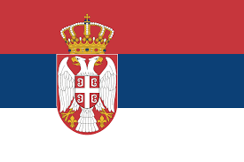
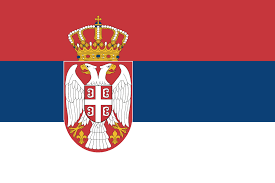
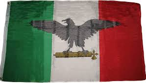
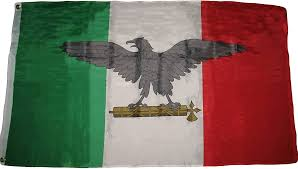

LA GRAN GUERRA
La Primera Guerra Mundial, también conocida como la Gran Guerra, fue un conflicto internacional que se desarrolló entre 1914 y 1918, involucrando a potencias de diferentes continentes y marcando el primer gran conflicto del siglo XX. Esta guerra quedo dividida en 2 bandos, los cuales fueron las potencias Centrales y las potencias de Entente y cada bando tuvo maquinaria distinta en el desalloro de la guerra.
Las potencias centrales
Las potencias centrales estaban conformadas por Alemania, Austria-Hungría, Imperio otomano, Bulgaria y Turquía.


Las potencias centrales tuvieron dos principales estrategias en la guerra, las cuales fueron: el Plan Schlieffen para invadir Francia y Bélgica, y derrotar a los Aliados rápidamente.
El Plan Schlieffen fue ideado para evitar una guerra en dos frentes, este plan consistía en derrotar a Francia antes de que Rusia pudiera movilizarse. El plan fracasó tras la Primera Batalla del Marne en 1914 y de esta manera acabar rapidamente con la fuerza enemiga.
Las potencias de la Entente
Las potencias de la Entente estaban conformadas por Gran Bretaña, Francia, Rusia Imperial, Italia, Grecia, Portugal, Rumania, Estados Unidos, Japón y Serbia.


 

La potencia de la Entente tuvieron tres principales estrategias en la guerra, las cuales fueron: la ofensiva total, el establecimiento de líneas de combate y el desarrollo de nuevas tecnologías.
La ofensiva total se basaba en que los estados mayores de las potencias europeas movilizaron ejércitos masivos para asestar golpes mortales al enemigo y el objetivo era romper el estancamiento en el Frente Occidental. El establecimiento de líneas de combate se basaba en que los ejércitos ocupaban trincheras excavadas en el suelo o parapetos construidos sobre terrenos bajos y las trincheras protegían a las tropas de armas pequeñas, ametralladoras y artillería y por ultimo el desarrollo de nuevas tecnologías tenia como objetico que se desarrollaron nuevas aeronaves, armas químicas y tanques. Los tanques fueron los grandes protagonistas en tierra y los perros llevaron instrucciones dentro de pequeñas cápsulas que se adherían a su cuerpo al campo de batalla.


 
